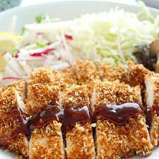

Chicken Katsu

Katsu is a Japanese dish of crispy fried cutlets coated with Pank bread crumbs. Popular varieties are chicken katus and tonkatsu which is made with pork.
Below you will find a detailed ingredient list and step-by-step instructions in the recipe below.
Ingredients
- Chicken: You'll need four skinless, boneless chicken breast halves - pounded to ½ inch thickeness
- Seasonings: This chicken katsu recipe is simply seasoned with salt and pepper.
- Flour: 2 tablespoons of All-purpose flour which helps seal the moisture, adds flavor, and promotes browning.
- Egg: 1 egg beaten which adds moisture and gives the Panko something to stick to.
- Panko: 1 cup of Panko bread crumbs are responsible for katsu's signature crunch.
- Oil: for a neutral oil with a high smoke point, such as canola or vegetable oil 1 cup prefered or as needed.
Preparation and Cooking Steps
- Season chicken breasts on both sides with salt and pepper. Place flour, beaten egg, and panko crumbs into separate shallow dishes. Coat chicken breasts in flour, shaking off any excess; dip into egg, and then press into panko crumbs until well coated on both sides.
- Heat oil in a large skillet over medium-high heat. Place chicken in the hot oil, and fry until golden brown, 3 or 4 minutes per side. Transfer to a paper towel-lined plate to drain
Return to Homepage